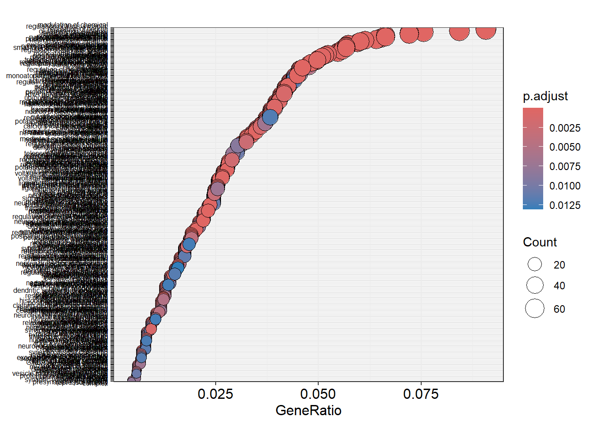
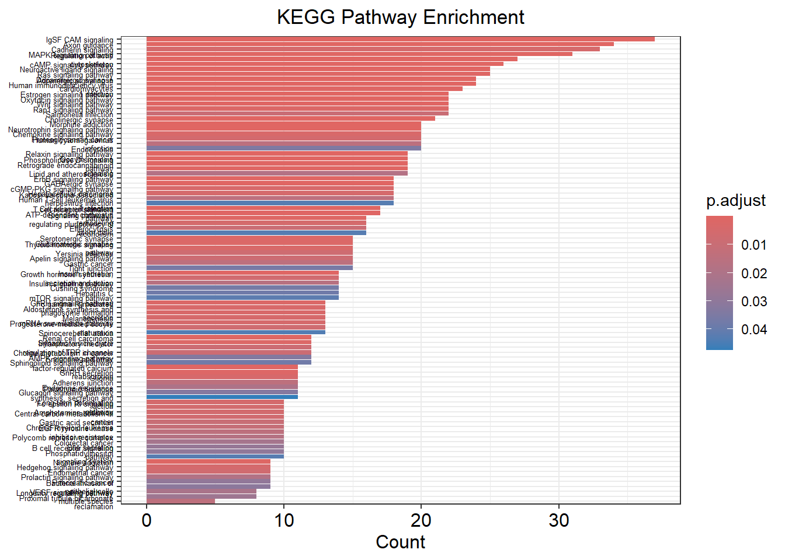
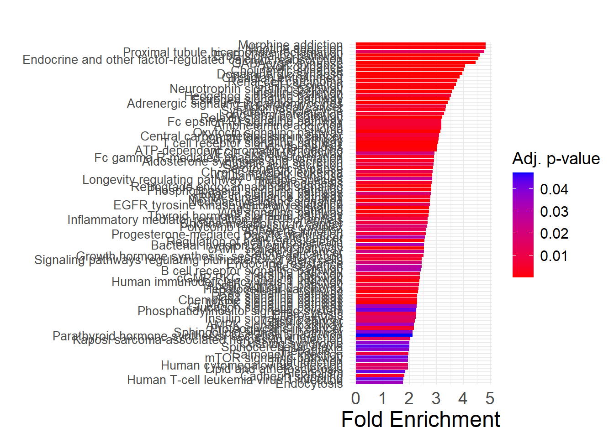
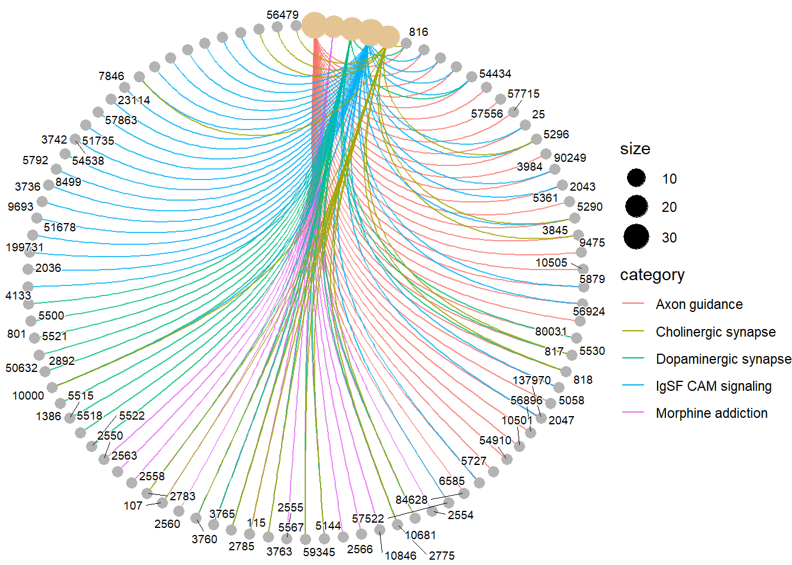
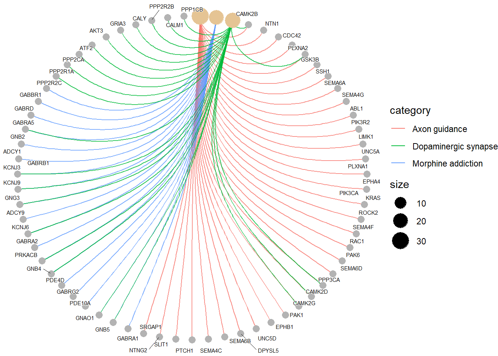
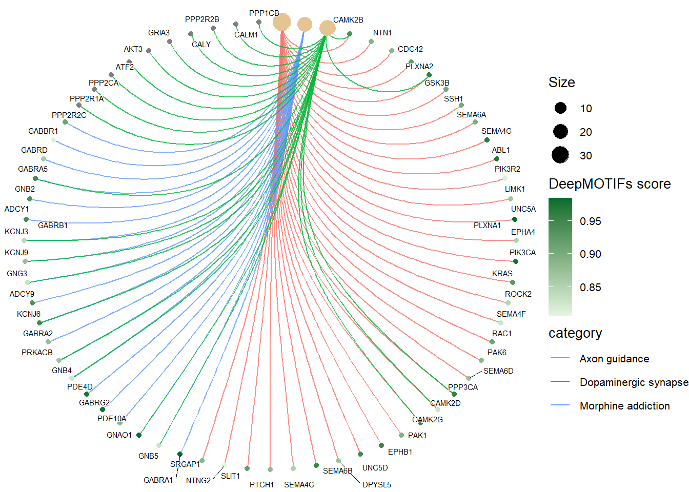

Last updated: 2026-06-01
Checks: 6 1
Knit directory: deep_motifs/
This reproducible R Markdown analysis was created with workflowr (version 1.7.1). The Checks tab describes the reproducibility checks that were applied when the results were created. The Past versions tab lists the development history.
The R Markdown file has unstaged changes. To know which version of
the R Markdown file created these results, you’ll want to first commit
it to the Git repo. If you’re still working on the analysis, you can
ignore this warning. When you’re finished, you can run
wflow_publish to commit the R Markdown file and build the
HTML.
Great job! The global environment was empty. Objects defined in the global environment can affect the analysis in your R Markdown file in unknown ways. For reproduciblity it’s best to always run the code in an empty environment.
The command set.seed(20230928) was run prior to running
the code in the R Markdown file. Setting a seed ensures that any results
that rely on randomness, e.g. subsampling or permutations, are
reproducible.
Great job! Recording the operating system, R version, and package versions is critical for reproducibility.
Nice! There were no cached chunks for this analysis, so you can be confident that you successfully produced the results during this run.
Great job! Using relative paths to the files within your workflowr project makes it easier to run your code on other machines.
Great! You are using Git for version control. Tracking code development and connecting the code version to the results is critical for reproducibility.
The results in this page were generated with repository version ee9dbbc. See the Past versions tab to see a history of the changes made to the R Markdown and HTML files.
Note that you need to be careful to ensure that all relevant files for
the analysis have been committed to Git prior to generating the results
(you can use wflow_publish or
wflow_git_commit). workflowr only checks the R Markdown
file, but you know if there are other scripts or data files that it
depends on. Below is the status of the Git repository when the results
were generated:
Ignored files:
Ignored: .Rhistory
Unstaged changes:
Modified: analysis/part03_func_enrichment_clusterprofiler_v3.Rmd
Note that any generated files, e.g. HTML, png, CSS, etc., are not included in this status report because it is ok for generated content to have uncommitted changes.
These are the previous versions of the repository in which changes were
made to the R Markdown
(analysis/part03_func_enrichment_clusterprofiler_v3.Rmd)
and HTML
(docs/part03_func_enrichment_clusterprofiler_v3.html)
files. If you’ve configured a remote Git repository (see
?wflow_git_remote), click on the hyperlinks in the table
below to view the files as they were in that past version.
| File | Version | Author | Date | Message |
|---|---|---|---|---|
| Rmd | ee9dbbc | han | 2026-05-21 | 5/21/2026 |
| html | ee9dbbc | han | 2026-05-21 | 5/21/2026 |
rm(list=ls())
set.seed(123)
library(tidyverse)
library(ggplot2)
library(DT)
library(VennDiagram)
library(rprojroot)
root <- rprojroot::find_rstudio_root_file()result_round1=as_tibble(read.csv(file.path(root, "../DiWangResults/results_20260521/final_risk_gene_pred.csv")))
SFARI_genes=as_tibble(read.csv(file.path(root, "../../../Dataset/SFARI_base/SFARI-Gene_genes_08-19-2024release_09-16-2024export.csv")))
positive_genes=SFARI_genes %>% filter (gene.score=="1") %>% dplyr::select(gene.symbol) %>% pull()
positive_genes=intersect(positive_genes, result_round1$gene)# 1. Load the local annotation library
if (!require("org.Hs.eg.db")) install.packages("org.Hs.eg.db")
library(org.Hs.eg.db)
# 2. Clean up version dots if any exist (e.g., ENSG00000000419.12 -> ENSG00000000419)
result_round1$ensembl_string <- gsub("\\..*", "", result_round1$ensembl_string)
# 3. Create the new gene symbol column using 'ENSEMBL' as the keytype
result_round1$gene_symbol <- mapIds(org.Hs.eg.db,
keys = result_round1$ensembl_string,
column = "SYMBOL",
keytype = "ENSEMBL",
multiVals = "first")
# 4. Optional: Relocate the column next to ensembl_string for easy reading
if (require("dplyr")) {
result_round1 <- result_round1 %>% relocate(gene_symbol, .after = ensembl_string)
}
score_cutoff=0.8
top_genes=result_round1 %>% filter(score_mean>score_cutoff) %>% dplyr::select(gene_symbol) %>% pull#if (!requireNamespace("BiocManager", quietly = TRUE))
# install.packages("BiocManager")
#BiocManager::install(c("clusterProfiler", "org.Hs.eg.db", "enrichplot"))
# Load the libraries
library(clusterProfiler)
library(org.Hs.eg.db) # For human gene annotations
library(enrichplot) # For visualizationego <- enrichGO(gene = top_genes,
OrgDb = org.Hs.eg.db,
keyType = "SYMBOL",
ont = "All", # BP: Biological Process, CC: Cellular Component, MF: Molecular Function
pAdjustMethod = "BH",
pvalueCutoff = 0.05,
qvalueCutoff = 0.01)
# View the result
#head(ego)
# Dotplot for GO enrichment
dotplot(ego, showCategory=nrow(ego), title="")+
theme(axis.text.y = element_text(size = 6)) # Adjust the size as needed
| Version | Author | Date |
|---|---|---|
| ee9dbbc | han | 2026-05-21 |
# Extract significant terms while preserving the enrichResult object
#significant_ego <- ego
#significant_ego@result <- significant_ego@result[significant_ego@result$p.adjust < 0.05, ]
# Create the dot plot with significant terms only
#dotplot(significant_ego, showCategory = nrow(significant_ego), title = "GO Enrichment - Biological Process")# Convert gene symbols to Entrez IDs
gene_df <- bitr(top_genes, fromType = "SYMBOL", toType = "ENTREZID", OrgDb = org.Hs.eg.db)
# Extract Entrez IDs
entrez_ids <- gene_df$ENTREZID
#print(entrez_ids)
ekegg <- enrichKEGG(gene = entrez_ids,
organism = "hsa", # Human
pAdjustMethod = "BH",
pvalueCutoff = 0.05)
# View the result
#head(ekegg)
# Barplot for KEGG enrichment
#barplot(ekegg, showCategory= nrow(ekegg), title="KEGG Pathway Enrichment")+
# theme(axis.text.y = element_text(size = 5))
#Sort ekegg results by Count in descending order
ekegg_sorted <- ekegg
ekegg_sorted@result <- ekegg@result[order(ekegg@result$Count, decreasing = TRUE), ]
# Plot with sorted categories
barplot(ekegg_sorted,
showCategory = nrow(ekegg_sorted), # show all
title = "KEGG Pathway Enrichment") +
theme(axis.text.y = element_text(size = 5),
plot.title = element_text(hjust = 0.5)) # Center title
| Version | Author | Date |
|---|---|---|
| ee9dbbc | han | 2026-05-21 |
# Extract and filter
df <- as.data.frame(ekegg@result)
df_filtered <- df[df$p.adjust < 0.05, ]
# Sort by Fold Enrichment
df_filtered <- df_filtered[order(df_filtered$FoldEnrichment, decreasing = TRUE), ]
# Plot
ggplot(df_filtered, aes(x = reorder(Description, FoldEnrichment),
y = FoldEnrichment,
fill = p.adjust)) +
geom_col() +
coord_flip() +
scale_fill_gradient(low = "red", high = "blue", name = "Adj. p-value") +
labs(title = "",
x = "",
y = "Fold Enrichment") +
theme_minimal() +
theme(
plot.title = element_text(hjust = 0.5, size = 25),
axis.text.y = element_text(size = 10),
axis.text.x = element_text(size = 14),
legend.title = element_text(size = 14), # increase legend title
legend.text = element_text(size = 12), # increase legend label text,
axis.title.x = element_text(size = 18) # y-axis title (this line was added)
)
| Version | Author | Date |
|---|---|---|
| ee9dbbc | han | 2026-05-21 |
length(unique(df_filtered$Description))[1] 94# Convert gene symbols to Entrez IDs
gene_df <- bitr(top_genes, fromType = "SYMBOL", toType = "ENTREZID", OrgDb = org.Hs.eg.db)
# Extract Entrez IDs
entrez_ids <- gene_df$ENTREZID
#print(entrez_ids)
ekegg <- enrichKEGG(gene = entrez_ids,
organism = "hsa", # Human
pAdjustMethod = "BH",
pvalueCutoff = 0.05)
# Network plot for KEGG pathways
cnetplot(ekegg, circular = TRUE, colorEdge = TRUE, cex_label_gene=0.5, cex_label_category=5)
| Version | Author | Date |
|---|---|---|
| ee9dbbc | han | 2026-05-21 |
length(unique(ekegg@gene))[1] 921# Convert Entrez IDs to Gene Symbols
gene_symbols <- bitr(entrez_ids, fromType = "ENTREZID", toType = "SYMBOL", OrgDb = org.Hs.eg.db)
# Merge the converted gene symbols back into the enrichment result
ekegg@result$geneID <- sapply(strsplit(ekegg@result$geneID, "/"), function(ids) {
symbols <- gene_symbols$SYMBOL[match(ids, gene_symbols$ENTREZID)]
paste(symbols, collapse = "/")
})
length(unique(ekegg@gene))[1] 921# Plot the cnetplot with gene symbols
genes_in_plot <- unique(unlist(strsplit(ekegg@result$geneID[1:2], "/")))
length(genes_in_plot)[1] 54plot_results <- result_round1[result_round1$gene_symbol %in% genes_in_plot, ]
plot_results %>%
datatable(extensions = 'Buttons',
options = list(dom = 'Blfrtip',
buttons = c('copy', 'csv', 'excel', 'pdf', 'print'),
lengthMenu = list(c(10,25,50,-1),
c(10,25,50,"All"))))# 2. Create the named vector specifically for these genes
gene_scores <- plot_results$score_mean
names(gene_scores) <- plot_results$gene_symbol
p1=cnetplot(ekegg, circular = TRUE, colorEdge = TRUE,
showCategory = 3, # This limits the plot to the top 3 results
cex_label_gene=0.4, cex_label_category=1)
p1
| Version | Author | Date |
|---|---|---|
| ee9dbbc | han | 2026-05-21 |
p=cnetplot(ekegg, circular = TRUE, colorEdge = TRUE,
showCategory = 3, # This limits the plot to the top 3 results
foldChange = gene_scores, # Scales gene circle size by mean score
cex_label_gene=0.4, cex_label_category=1)
# Use this to make the size differences more obvious
p+ # Change the color gradient to shades of blue and rename the legend
scale_color_gradient(low = "#e5f5e0", high = "#006d2c", name = "DeepMOTIFs score") +
# Adjust the size range and rename the size legend
scale_size_continuous(range = c(1.5, 6), name = "Size") +
# Optional: Clean up the theme
theme(legend.title = element_text(size = 10),
legend.text = element_text(size = 8))
| Version | Author | Date |
|---|---|---|
| ee9dbbc | han | 2026-05-21 |
# Extract top 5 pathways by p values
ekegg_top5 <- ekegg
ekegg_top5@result <- ekegg@result[1:5, ]
# Convert to tibble to use dplyr functions safely
ekegg_df <- as_tibble(ekegg_top5@result)
# Extract gene–pathway relationships
gene_pathway_df <- ekegg_df %>%
dplyr::select(Description, geneID) %>%
tidyr::separate_rows(geneID, sep = "/") %>%
dplyr::rename(pathway = Description, gene = geneID) %>%
dplyr::distinct()
gene_pathway_df%>%
datatable(extensions = 'Buttons',
options = list(dom = 'Blfrtip',
buttons = c('copy', 'csv', 'excel', 'pdf', 'print'),
lengthMenu = list(c(10,25,50,-1),
c(10,25,50,"All"))))#library(dplyr)
#ekegg@result %>%
# arrange(p.adjust) %>%
# select(ID, Description, p.adjust) %>%
# head(10) # Top 10 enriched terms
#list top 10 enriched terms
ekegg_result_sorted <- ekegg@result[order(ekegg@result$p.adjust), ]
head(ekegg_result_sorted[, c("ID", "Description", "p.adjust")], 20) ID Description
hsa04360 hsa04360 Axon guidance
hsa05032 hsa05032 Morphine addiction
hsa04728 hsa04728 Dopaminergic synapse
hsa04517 hsa04517 IgSF CAM signaling
hsa04725 hsa04725 Cholinergic synapse
hsa04012 hsa04012 ErbB signaling pathway
hsa04727 hsa04727 GABAergic synapse
hsa04261 hsa04261 Adrenergic signaling in cardiomyocytes
hsa04915 hsa04915 Estrogen signaling pathway
hsa04722 hsa04722 Neurotrophin signaling pathway
hsa04713 hsa04713 Circadian entrainment
hsa04921 hsa04921 Oxytocin signaling pathway
hsa04082 hsa04082 Neuroactive ligand signaling
hsa04926 hsa04926 Relaxin signaling pathway
hsa04810 hsa04810 Regulation of actin cytoskeleton
hsa04024 hsa04024 cAMP signaling pathway
hsa04114 hsa04114 Oocyte meiosis
hsa04010 hsa04010 MAPK signaling pathway
hsa04310 hsa04310 Wnt signaling pathway
hsa04961 hsa04961 Endocrine and other factor-regulated calcium reabsorption
p.adjust
hsa04360 4.544565e-10
hsa05032 4.375783e-07
hsa04728 5.220997e-07
hsa04517 1.666001e-06
hsa04725 2.044440e-06
hsa04012 2.044440e-06
hsa04727 3.068814e-06
hsa04261 3.739185e-06
hsa04915 8.637506e-06
hsa04722 1.161357e-05
hsa04713 3.830033e-05
hsa04921 3.923748e-05
hsa04082 7.936883e-05
hsa04926 1.217813e-04
hsa04810 1.217813e-04
hsa04024 2.091315e-04
hsa04114 2.452471e-04
hsa04010 2.454524e-04
hsa04310 2.720406e-04
hsa04961 2.962257e-04
sessionInfo()R version 4.4.0 (2024-04-24 ucrt)
Platform: x86_64-w64-mingw32/x64
Running under: Windows 11 x64 (build 26200)
Matrix products: default
locale:
[1] LC_COLLATE=English_United States.utf8
[2] LC_CTYPE=English_United States.utf8
[3] LC_MONETARY=English_United States.utf8
[4] LC_NUMERIC=C
[5] LC_TIME=English_United States.utf8
time zone: America/Chicago
tzcode source: internal
attached base packages:
[1] stats4 grid stats graphics grDevices utils datasets
[8] methods base
other attached packages:
[1] enrichplot_1.24.4 clusterProfiler_4.12.6 org.Hs.eg.db_3.19.1
[4] AnnotationDbi_1.66.0 IRanges_2.38.0 S4Vectors_0.42.0
[7] Biobase_2.64.0 BiocGenerics_0.50.0 rprojroot_2.0.4
[10] VennDiagram_1.7.3 futile.logger_1.4.3 DT_0.33
[13] lubridate_1.9.3 forcats_1.0.0 stringr_1.5.1
[16] dplyr_1.1.4 purrr_1.0.2 readr_2.1.5
[19] tidyr_1.3.1 tibble_3.2.1 ggplot2_3.5.1
[22] tidyverse_2.0.0
loaded via a namespace (and not attached):
[1] RColorBrewer_1.1-3 rstudioapi_0.16.0 jsonlite_1.8.8
[4] magrittr_2.0.3 farver_2.1.2 rmarkdown_2.26
[7] fs_1.6.4 zlibbioc_1.50.0 vctrs_0.6.5
[10] memoise_2.0.1 ggtree_3.12.0 htmltools_0.5.8.1
[13] lambda.r_1.2.4 gridGraphics_0.5-1 sass_0.4.9
[16] bslib_0.7.0 htmlwidgets_1.6.4 plyr_1.8.9
[19] httr2_1.0.1 futile.options_1.0.1 cachem_1.0.8
[22] whisker_0.4.1 igraph_2.0.3 lifecycle_1.0.4
[25] pkgconfig_2.0.3 gson_0.1.0 Matrix_1.7-0
[28] R6_2.5.1 fastmap_1.1.1 GenomeInfoDbData_1.2.12
[31] aplot_0.2.5 digest_0.6.35 ggnewscale_0.5.1
[34] colorspace_2.1-0 patchwork_1.3.0 crosstalk_1.2.1
[37] RSQLite_2.3.6 labeling_0.4.3 fansi_1.0.6
[40] timechange_0.3.0 httr_1.4.7 polyclip_1.10-7
[43] compiler_4.4.0 bit64_4.0.5 withr_3.0.0
[46] BiocParallel_1.38.0 viridis_0.6.5 DBI_1.2.3
[49] highr_0.10 ggforce_0.4.2 R.utils_2.12.3
[52] MASS_7.3-60.2 rappdirs_0.3.3 tools_4.4.0
[55] scatterpie_0.2.4 ape_5.8-1 httpuv_1.6.15
[58] R.oo_1.27.0 glue_1.7.0 nlme_3.1-164
[61] GOSemSim_2.30.2 promises_1.3.0 shadowtext_0.1.4
[64] reshape2_1.4.4 fgsea_1.30.0 generics_0.1.3
[67] gtable_0.3.5 tzdb_0.4.0 R.methodsS3_1.8.2
[70] data.table_1.15.4 hms_1.1.3 tidygraph_1.3.1
[73] utf8_1.2.4 XVector_0.44.0 ggrepel_0.9.5
[76] pillar_1.9.0 yulab.utils_0.2.0 later_1.3.2
[79] splines_4.4.0 tweenr_2.0.3 treeio_1.28.0
[82] lattice_0.22-6 bit_4.0.5 tidyselect_1.2.1
[85] GO.db_3.19.1 Biostrings_2.72.0 knitr_1.46
[88] git2r_0.33.0 gridExtra_2.3 xfun_0.43
[91] graphlayouts_1.2.2 stringi_1.8.4 UCSC.utils_1.0.0
[94] lazyeval_0.2.2 ggfun_0.1.8 workflowr_1.7.1
[97] yaml_2.3.8 evaluate_0.23 codetools_0.2-20
[100] ggraph_2.2.1 qvalue_2.36.0 ggplotify_0.1.2
[103] cli_3.6.2 munsell_0.5.1 jquerylib_0.1.4
[106] Rcpp_1.0.12 GenomeInfoDb_1.40.0 png_0.1-8
[109] parallel_4.4.0 blob_1.2.4 DOSE_3.30.5
[112] tidytree_0.4.6 viridisLite_0.4.2 scales_1.3.0
[115] crayon_1.5.2 rlang_1.1.3 cowplot_1.1.3
[118] fastmatch_1.1-6 KEGGREST_1.44.0 formatR_1.14